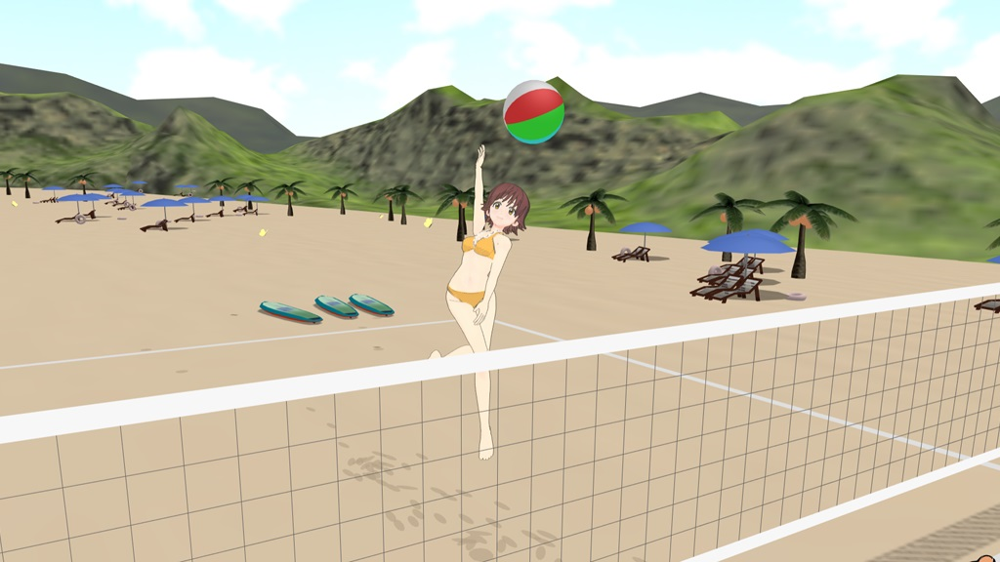
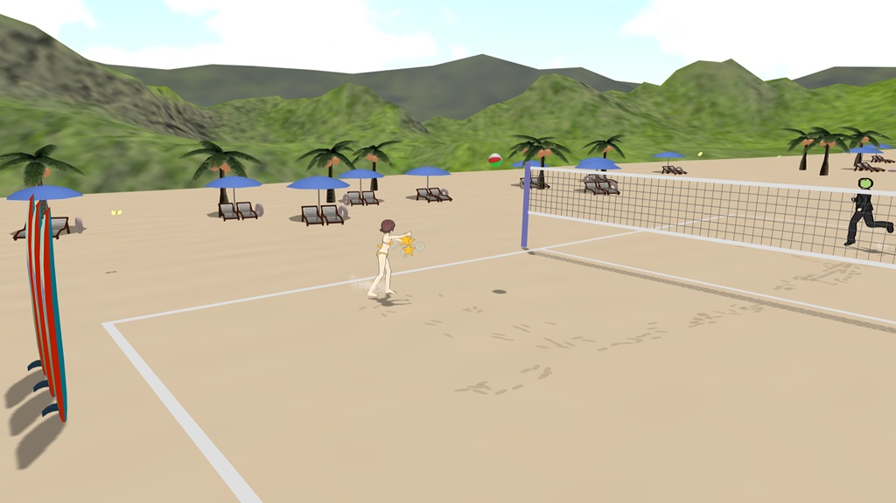
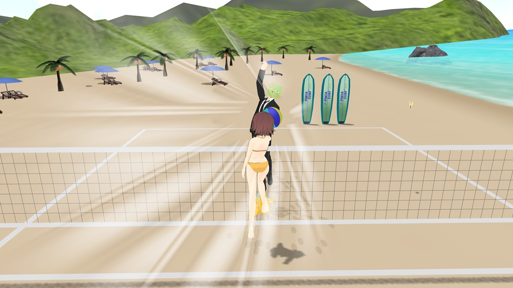

ミツボシスパイク ～未央とビーチバレー～
|
|
PC（Windows,Mac問わず）、一部スマートフォン・タブレットなど 新感覚！１対１のビーチバレー ウェブブラウザで簡単操作 通常のゲームモードです。 |
|
|
   |
||
| Q.なにするやつですか | A.アイドルマスターシンデレラガールズ・本田未央ちゃんと マンツーマンでビーチバレーをするゲームです |
|
| Q.どうやって遊 | A.大抵のことはチュートリアルで説明しています | |
| Q.チュートリアルが見れなくなりました | A.画面右上の設定画面からチュートリアル「次回再起動時に出す」 を選んでブラウザをリロードしてください |
|
| Q.動作が重くて遊びにくい | A.画面右上の設定画面から「軽量モード」を選んで ブラウザをリロードしてください。 背景オブジェクトやエフェクト等の描画をカットします |
|
| Q.難易度って具体的にどう違う？ | A.相手の攻撃精度、サークルの赤ゾーンの時間、プレイヤーの疲労回復速度などです。 | |
| Q.ゲームせずただ眺めていたい | A.こっそり観戦モードを用意しています | |
| Q.未央しか使えないの？ | A.タイトルで右ドラッグ＋←→（スマホは２指フリック）でキャラセレクトができます。 性能の違いはありません。 |
|
| Q.VR版はどこに？ | A.面白くなかったので開発中止にしました。そのかわり、VR版に実装予定だった勝利演出を実装しました。 | |
| Q.隠し勝利演出はどうやって出すの？ | A.タイトルでぴにゃを選び、未央を相手に10-0で完封して下さい。（EASYでも可） | |
| 更新履歴 |
20/07/29 隠し勝利演出を追加 20/07/24 リリース |
|
| 使った素材について |
MMD＆テクスチャ haruchan様 未央&水着ボディ hana様 海岸と夜空のステージ ニクムニ様 モブ蝶 肉八様 ぴにゃこら太（ヘッド） フラン様 着せ替え用スーツ バトーキン様 あと自作 サウンド各種 ポケットサウンド・フリー効果音素材 On-Jin～音人～・効果音ラボ・魔王魂 様 |
|
| サポートとか苦情とか感想とか(?) |
珠美の踏み台 @megane_donuts 踏み台工房 |